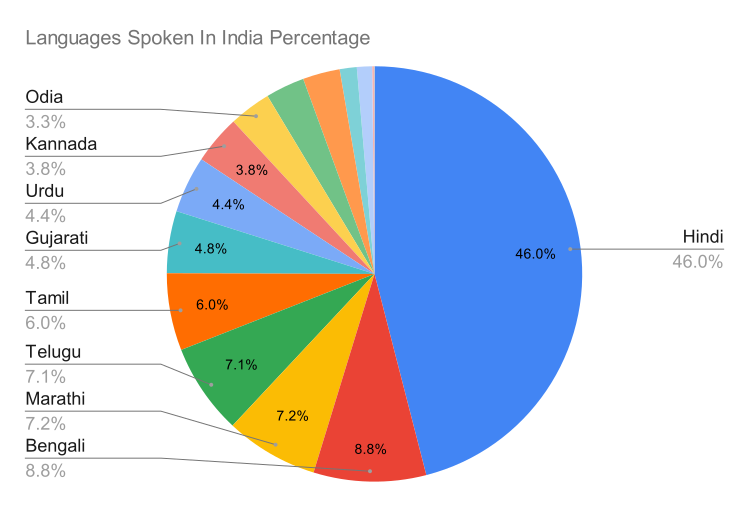
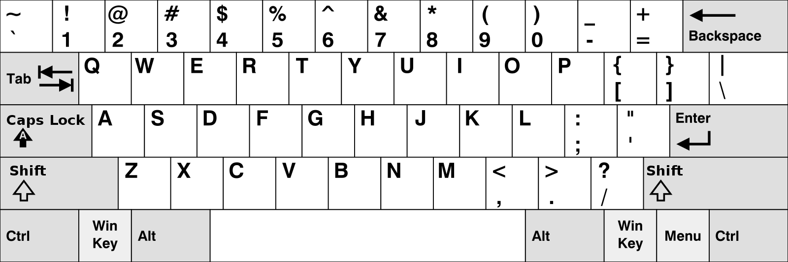
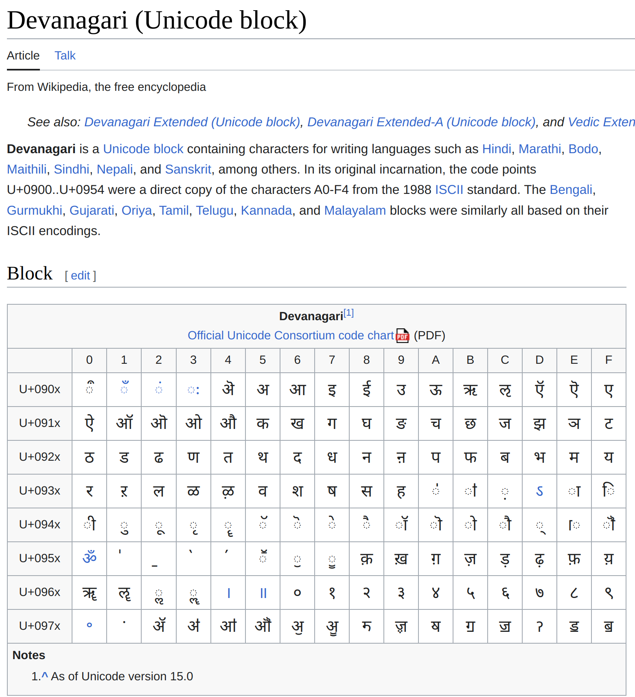
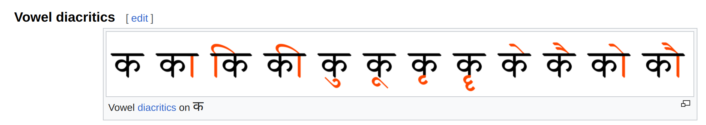
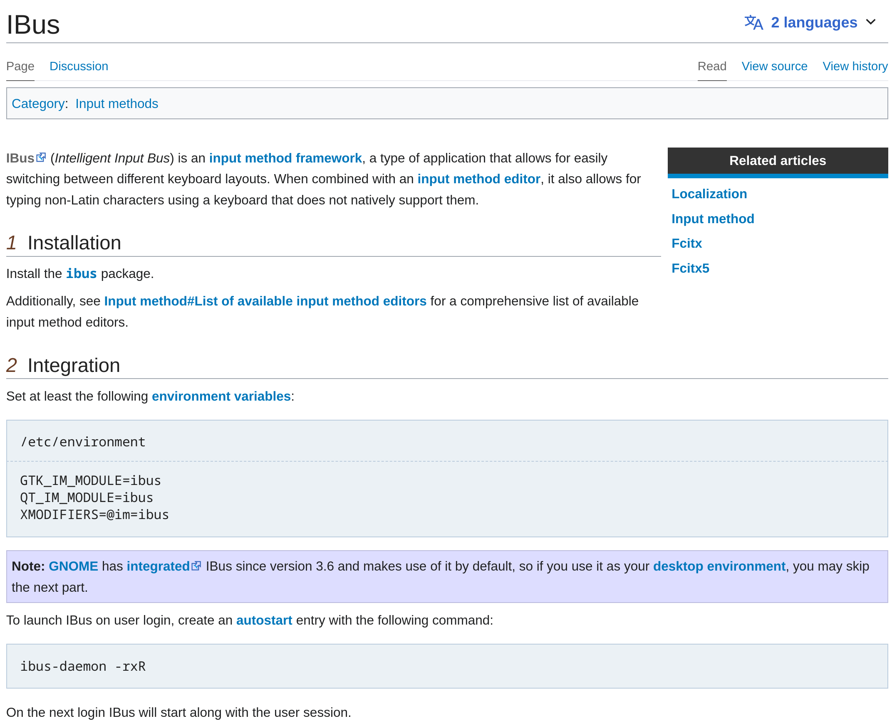
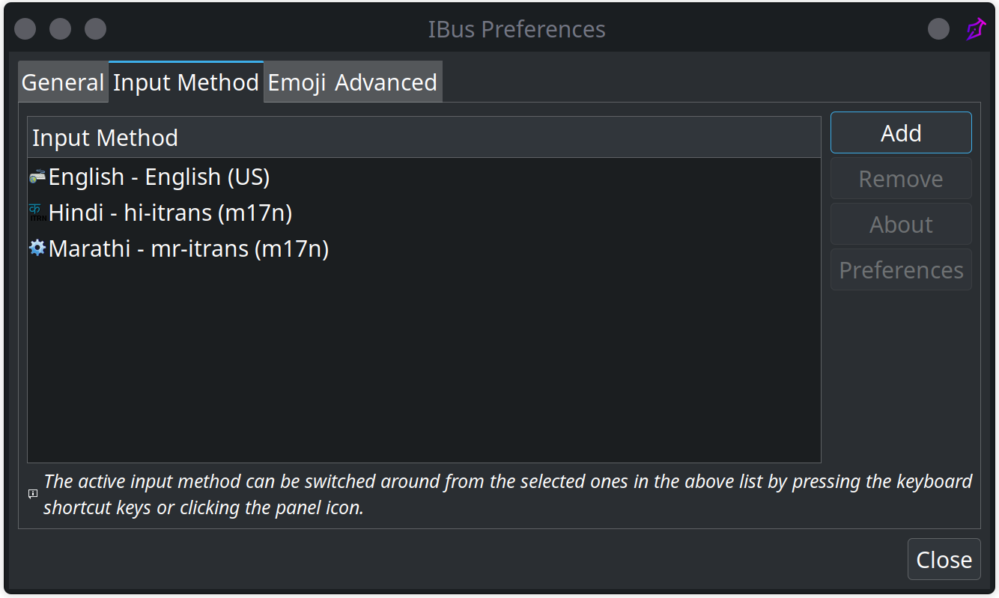

Your browser doesn't support the features required by impress.js,
so you are presented with a simplified version of this presentation.
For the best experience please use the latest Chrome,
Safari or Firefox browser.
Typing in Indian languages in Linux
- Tanay PrabhuDesai
@ GoaFOSS 2023
भारतिय भशाओं में टाईप कैसे करें
- तनय प्रभु देसाई
@ GoaFOSS 2023
Why type in Indian languages?

The need for localization in Linux
- Reach more (wider) audience
- Language Accessibility
- Cultural adaptation
- User Experience (UX)
- Government and Education
- Documentation and Support
The problem that we have

Types of writing systems that exists
- Logographs
- Syllabaries
- Alphabets
- Abjads
- Abugidas
Logograph / Logosyllabary
𓈖𓆓𓇛𓅓𓏜𓆤 𓏏𓏌 𓏏𓈖 - (This honey is sweet)
木 - (Mu) 火 - (Huǒ) 門 - (Mén) [Tree Fire Door]
Syllabaries
こんにちは、さくら (Kon'nichiwa, sakura) Hello Sakura
Alphabets
Γεια πώς είσαι - (Geia pós eísai) Hello, how are you
Olá, como vai
Привет, как дела - (Privet, kak dela)
Abjads
مرحبًا - (mrhban)
سلام - (salam)
שָׁלוֹם - (shalom)
Abugidas
आपका क्या नाम है?
તમારું નામ શું છે? - (Tamāruṁ nāma śuṁ chē?)
உங்கள் பெயர் என்ன? - (Uṅkaḷ peyar eṉṉa?)
Typing with unicodes

How the Japanese type using QWERTY keyboard
Three scripts
- Hiragana
- Katakana
- Kanji (not necessary)
So how do they type it?
Keystrokes that map to the sound (In Japanese)
さ = sa く= ku ら = ra
Sakura = さくら
さ = sa よ = yo な = na ら = ra
Sayonara = さよなら
こ = ko に = ni ち = chi わ = wa
Konichiwa = こにちわ
How different are Abugidas?
Abugidas are built upon vowel diacritics

Introduction to IBus and m17n
# pacman -S ibus ibus-m17n
# apt install ibus ibus-m17n
Setting it up

Support for different language and input types

Live demo of IBus
Potential autocomplete support
Why I chose Impress.js
- No proper support for custom fonts
- Can’t load SVG images
- Lame animations
- No version control and sharing via Github
Thank you! Questions?